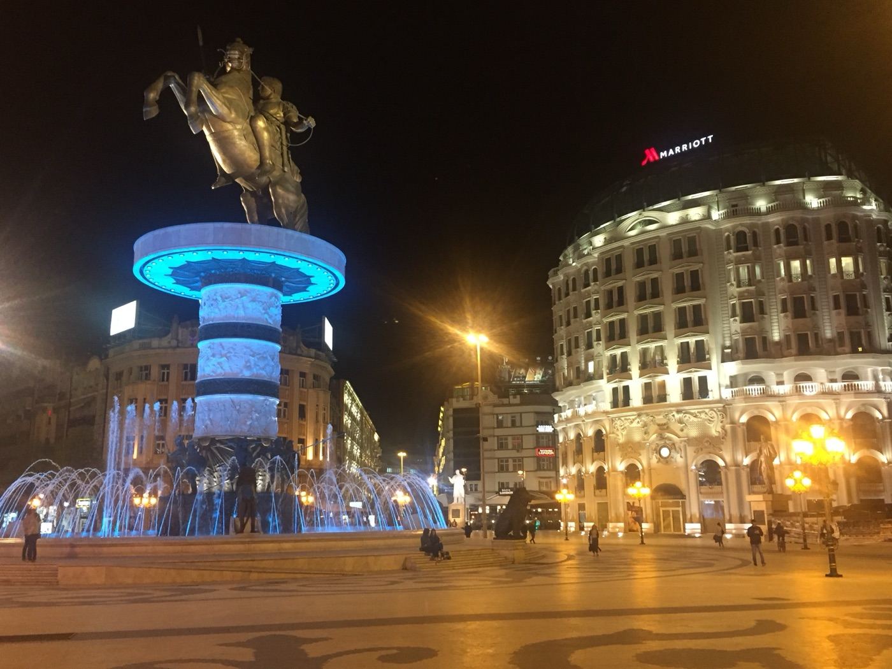
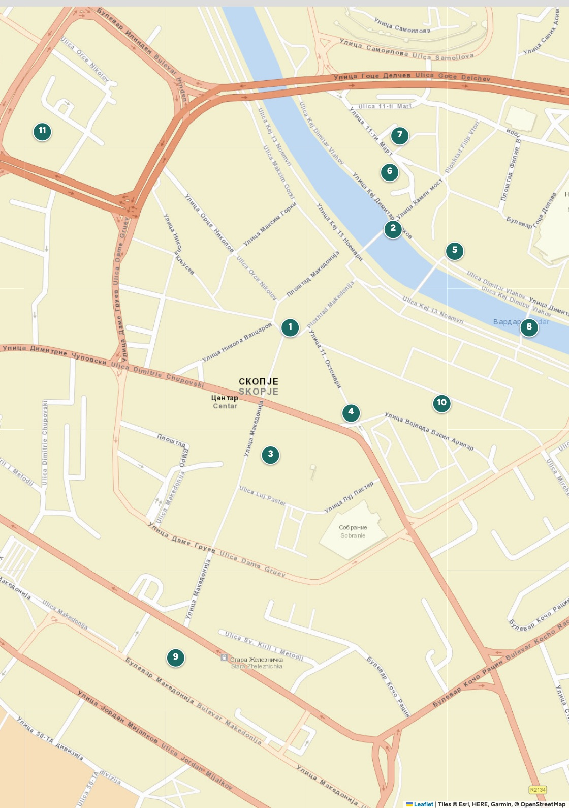

Zone
Il centro
e Skopje 2014
Marmo bianco, colonne, statue colossali e un fiume: la città costruita in quattro anni per somigliare a un'altra.
Il centro e Skopje 2014Zone
34
Perché andarci
Un centro costruito nel 2014
Fra il 2010 e il 2014 Skopje si è rifatta il centro. In quattro anni sono arrivati 136 fra edifici, facciate, statue e fontane: archi di trionfo, colonnati, galeoni ormeggiati su un fiume che non è navigabile.
Il risultato divide, e va bene così: si può trovarlo ridicolo o commovente, ma è la cosa più interessante da guardare in città, perché racconta in modo brutale cosa succede quando un Paese piccolo decide di costruirsi un passato.
Sotto il marmo c'è ancora tutto il resto: la città modernista degli anni Sessanta, ricostruita dopo il terremoto con l'aiuto di settantotto Paesi, e la vecchia stazione con l'orologio fermo alle 5:17.
- Quanto serve
- Mezza giornata per i musei, un'ora per la piazza. Di sera, quaranta minuti di passeggiata.
- Quando
- Le statue rendono di notte. I musei sono tutti chiusi il lunedì.
- Dalla piazza
- Tutto il capitolo sta entro dieci minuti a piedi, tranne la vecchia stazione (15 min).
Il trucco
Fate la piazza due volte: una di giorno, per capire le dimensioni, e una dopo le sei, quando l'illuminazione nasconde i difetti e la fontana del Guerriero cambia colore. Sono due posti diversi.

Numeri verdi: da vedere · il fiume Vardar divide il centro dal Vecchio Bazar
Il centro e Skopje 2014Zone
36
La mappa
Tutti i luoghi del capitolo
Top sight
- 1Piazza Macedonia e il Guerrierop. 37
- 2Ponte di Pietrap. 39
Da vedere
- 3Casa di Madre Teresap. 41
- 4Porta Macedoniap. 41
- 5Museo Archeologicop. 40
- 6Museo della Lotta Macedonep. 40
- 7Memoriale dell'Olocaustop. 40
- 8Ponte dell'Artep. 42
- 9Vecchia stazionep. 42
- 10Centro commerciale GTCp. 42
- 11San Clemente di Ocridap. 42
Orientarsi
Il centro è un rettangolo di seicento metri per quattrocento. Piazza Macedonia sta al centro; verso nord, in quattro minuti, il Ponte di Pietra porta al Vecchio Bazar. Lungo il fiume, sulla riva sinistra, stanno in fila i tre musei nuovi. A sud della piazza la pedonale ulica Makedonija scende verso la casa di Madre Teresa, la Porta e poi la vecchia stazione.
Non perdetevi: è impossibile
Se vi disorientate, cercate il fiume o la croce illuminata sul monte Vodno: una sta a nord, l'altra a sud. In mezzo c'è tutto.
Il centro e Skopje 2014Zone
37
Top sight · 1
Piazza Macedonia e il Guerriero a cavallo
Dodici metri di bronzo su un piedistallo di dieci, fusi a Firenze e inaugurati nel 2011.
È la statua più discussa dei Balcani, e la discussione comincia dal nome. Ufficialmente si chiama Guerriero a cavallo. Tutti sanno che è Alessandro Magno.
Nell'ottobre del 2010 l'allora ministro degli Esteri Antonio Milošoski disse al Guardian che la statua rappresentava Alessandro ed era un gesto di sfida verso la Grecia, che da vent'anni contestava alla Macedonia il diritto di usare quel nome. L'anno dopo il governo cambiò versione: è un guerriero generico.
- Dove
- Al centro della piazza, in mezzo alla fontana. Sempre visibile, gratis.
- Misure
- Statua in bronzo di 12 metri su piedistallo di 10, fontana compresa: 22 metri in tutto.
- Scultrice
- Valentina Stevanovska.
- Fusione
- Fonderia Artistica Ferdinando Marinelli, Firenze.
- Costo
- Stimato fra 5,3 milioni di euro (BBC) e 9,4 milioni.
Il centro e Skopje 2014Zone
38
Top sight · 1
Cosa è stato Skopje 2014
Il monumento fu inaugurato l'8 settembre 2011, vent'anni esatti dopo il referendum con cui la Macedonia aveva lasciato la Jugoslavia. Era il pezzo più visibile di un piano molto più grande.
Skopje 2014 fu annunciato nel 2010 dal governo del partito nazionalista VMRO-DPMNE. Il proposito dichiarato era dare alla capitale un aspetto classico, con edifici antisismici. Il piano iniziale parlava di una ventina di edifici e una quarantina di monumenti. Alla fine ne furono costruiti 136.
Quanto è costato non si sa con certezza, ed è parte del problema: le finanze del progetto non sono mai state trasparenti. Il governo dell'epoca dichiarò 208 milioni di euro. L'inchiesta della rete di giornalisti investigativi BIRN arrivò a oltre 660 milioni. Wikipedia riporta più di 700 milioni di dollari. L'opposizione sosteneva che la cifra vera fosse il doppio di quella ufficiale.
Lo sapevi?
Nel 2018 l'Accordo di Prespa chiuse la disputa sul nome con la Grecia: il Paese diventò Macedonia del Nord. Fra le conseguenze, accanto al monumento fu messa una targa che precisa che Alessandro apparteneva alla civiltà ellenica. È ancora lì: cercatela, è il modo più rapido per capire quarant'anni di politica balcanica.
Come guardarlo
La parola che ricorre nelle critiche è antichizzazione: l'uso dell'antichità per costruire un'identità nazionale recente. I sostenitori la chiamano costruzione di una nazione, i critici kitsch nazionalista e spreco in anni di crisi. Camminando in piazza si capisce perché entrambe le posizioni hanno qualcosa di vero.
Il centro e Skopje 2014Zone
39
Top sight · 2
Il Ponte di Pietra
Dodici arcate di pietra, duecentoquattordici metri, sei di larghezza. È il simbolo della città, sta sullo stemma e sulla bandiera di Skopje, e separa le due anime del centro.
Fu costruito fra il 1451 e il 1469 su fondazioni romane, per volontà del sultano Mehmed II il Conquistatore, lo stesso che aveva preso Costantinopoli. Da allora è stato danneggiato e riparato decine di volte: il terremoto del 1555 ne distrusse quattro piloni, rifatti nello stesso anno.
Non è solo architettura. Nel 1689 qui fu giustiziato Karpoš, il capo della rivolta contro gli ottomani: il suo corpo fu gettato nel Vardar. È una delle storie fondative del Paese, e oggi una statua lo ricorda a pochi metri dal ponte.
Dodici arcate, 214 metri: il ponte è sullo stemma della città.
- Dove
- Quattro minuti a nord della piazza. Sempre aperto, gratis.
- Misure
- 214 metri di lunghezza, 6 di larghezza, 12 arcate a tutto sesto.
- Quando
- All'imbrunire, quando si accendono le luci su entrambe le rive.
Il trucco
Fermatevi a metà ponte e guardate nelle due direzioni. A sud: colonne, marmo, insegne al neon. A nord: minareti, tetti bassi, la collina del Kale. Sono quattro minuti di cammino e cinquecento anni di distanza.
Il centro e Skopje 2014Zone
40
Top sight · 2
La riva sinistra e i suoi musei
Il Museo Archeologico sulla riva sinistra: colonnato, cupole e il Vardar davanti.
5
Museo Archeologico della Macedonia 400 MKD
Mar-dom 10:00-18:00, ultimi biglietti alle 17:00 · chiuso lunedì
Il più grande dei musei nuovi, dentro uno degli edifici più sfacciati del progetto 2014. Dentro c'è roba vera: oro di Trebeništa, mosaici, una ricostruzione di una necropoli. La visita guidata è compresa nel biglietto.
6
Museo della Lotta Macedone 300 MKD
Mar-dom 10:00-18:00, ultimo ingresso 17:15 · chiuso lunedì
Racconta un secolo di lotta per l'indipendenza con statue di cera e scenografie. Si visita solo con la guida e il tono è dichiaratamente di parte: anche questo fa parte di quello che si viene a vedere.
7
Memoriale dell'Olocausto 100 MKD
Mar-ven 09:00-19:00, sab-dom 09:00-15:00 · chiuso lunedì
Dedicato ai 7.148 ebrei della Macedonia deportati nel marzo del 1943 e uccisi a Treblinka: quasi l'intera comunità, in pochi giorni. Sorge nel quartiere ebraico raso al suolo dal terremoto. È il museo più duro e il più necessario della città. La domenica chiude alle 15.
Il centro e Skopje 2014Zone
41
Da vedere
Una casa, un arco
3
Casa memoriale di Madre Teresa gratis
Ulica Makedonija, 5 min dalla piazza · mar-dom 10:00-18:00, ultimo ingresso 17:45 · chiusa lunedì e festivi
Anjezë Gonxhe Bojaxhiu nacque a Skopje nel 1910, da famiglia albanese cattolica, quando la città era ancora ottomana. Il museo sta dove sorgeva la chiesa del Sacro Cuore in cui fu battezzata, distrutta dal terremoto. L'edificio del 2009 è bizzarro quanto il resto della città, ma l'esposizione è sobria: oggetti personali, lettere, una cappella al piano superiore.
Ingresso e visita guidata gratuiti, ma i gruppi devono prenotare: siamo sei, scrivete prima.
4
Porta Macedonia gratis
Piazza Pella, 3 min dalla piazza · si entra nella terrazza quando è aperta
Un arco di trionfo alto ventuno metri, costruito fra il 2011 e il gennaio 2012, con fregi che raccontano la storia macedone dall'antichità all'indipendenza. All'epoca fu contestato anche fisicamente: dei manifestanti lo imbrattarono di vernice. Dentro ci sono due piani e una terrazza panoramica, aperti in modo irregolare.
Il centro e Skopje 2014Zone
42
Da vedere
L'orologio fermo, i ponti, il cemento
9
La vecchia stazione e il Museo della Città
15 min a piedi dalla piazza, verso sud · museo gratuito, chiuso lunedì
Il 26 luglio 1963, alle 5:17 del mattino, un terremoto di magnitudo 6,1 rase al suolo l'80% di Skopje in venti secondi: più di mille morti, duecentomila senza casa. Della stazione ferroviaria resta mezzo edificio, tagliato di netto, con l'orologio fermo su quell'ora. Dentro c'è il Museo della Città.
8
Il Ponte dell'Arte gratis
Pedonale, fra la piazza e la riva sinistra · sempre aperto
Un ponte pedonale fiancheggiato da una doppia fila di statue di artisti, musicisti e scrittori macedoni. Poco più a monte c'è il gemello, il Ponte delle Civiltà, con un'altra lunga fila di statue. Di sera sono illuminati e si attraversano in un minuto.
10
Il centro commerciale GTC
Dietro la piazza, lato sud-est · aperto tutti i giorni
Un gigantesco centro commerciale in cemento a vista degli anni Settanta, uno dei pezzi migliori della ricostruzione modernista. Messo accanto al marmo del 2014, spiega da solo il salto di gusto fra due epoche. Dentro ci sono bar e bagni puliti: utile.
11
Chiesa di San Clemente di Ocrida
10 min a ovest, oltre il bulevar · ingresso libero
La cattedrale ortodossa della città, costruita alla fine del Novecento: una cupola di cemento che sembra un'astronave atterrata. Fuori è brutale, dentro è coperta di affreschi moderni e mosaici dorati. È il contrario esatto del marmo in piazza.
Il centro e Skopje 2014Zone
43
A piedi
Il centro quando fa buio
Un'ora e un quarto, un chilometro e mezzo, tutto in piano. Da fare dopo le 17, quando le luci sono accese e non resta altro da vedere alla luce del giorno.
- Piazza Macedonia 15 min
Il Guerriero, la fontana che cambia colore, il palazzo della Banca Nazionale.
- Ulica Makedonija 10 min
La pedonale verso sud, fra negozi e caffè. È qui che in dicembre monteranno il bazar natalizio, dal 22.
- Porta Macedonia 10 min
L'arco su piazza Pella, illuminato dal basso.
- Casa di Madre Teresa 5 min
Di sera è chiusa, ma la facciata illuminata e la statua in strada valgono la sosta.
- Ponte dell'Arte 10 min
Si torna verso il fiume e si attraversa fra le due file di statue.
- Riva sinistra 15 min
I tre musei visti da fuori, con il colonnato riflesso nel Vardar.
- Ponte di Pietra 10 min
Si rientra in piazza attraversando il ponte: il momento migliore della giornata.
Il trucco
Le fontane della piazza vanno a intermittenza e i giochi d'acqua con le luci partono a ore piene. Se arrivate e sono spente, aspettate dieci minuti davanti a un caffè: ripartono.
Il centro e Skopje 2014Zone
44
Mangiare e bere
Dove si mangia in centro
In piazza si beve, non si mangia: i locali sulla piazza vivono di passaggio e costano il doppio. Per mangiare bene si va nel bazar (p. 57) o a Debar Maalo, il quartiere dei ristoranti, un quarto d'ora a piedi verso nord-ovest.
1
Debar Maalo, il quartiere €€
15-18 min a piedi dalla piazza, o 5 di taxi (~150 MKD)
Vie basse e case anni Trenta, con decine di kafana una accanto all'altra. È dove va a cena la città, non il turismo. Il nome più sicuro è Skopski Merak, in Debarca 51 (tel. +389 2 321 2215): pastrmajlija nel forno a legna, griglia, trileće. Venerdì e sabato fino a mezzanotte, si prenota anche online.
2
I caffè del lungofiume €
Kej 13-ti Noemvri, riva destra · aperti tutto il giorno
La fila di locali lungo il Vardar fra il Ponte di Pietra e il Ponte dell'Arte: caffè, birra e vista sui musei illuminati. Fra questi c'è Soul Kitchen, al numero 8, cucina macedone e vini locali (tel. +389 78 887 733; non prende prenotazioni online, bisogna chiamare).
3
Il caffè in piazza, per una volta €
Sui portici intorno alla piazza
Costa il doppio del resto della città e resta sotto i due euro. Vale per una mezz'ora al tramonto, guardando la piazza che si accende. Da evitare per i pasti.
Il centro e Skopje 2014Zone
45
Shopping e consigli
Cosa si compra da questa parte del fiume
1
Ulica Makedonija
Pedonale a sud della piazza · negozi 10:00-20:00 circa
Catene internazionali e qualche negozio locale. Utile se manca qualcosa — guanti, una sciarpa, un ombrello — non per i souvenir, che si trovano migliori e a metà prezzo nel bazar.
2
Vinoteche e prodotti locali
Nelle vie intorno alla piazza
È qui che si compra il vino della valle di Tikveš — un Vranec buono sta sui 400-600 MKD — e l'ajvar in vasetto. Ricordate che sono liquidi: vanno in stiva.
Lo sapevi?
Il Vardar che attraversa il centro è lo stesso fiume che in Grecia si chiama Axiós e sfocia vicino a Salonicco. Per secoli è stata la strada naturale fra l'Egeo e i Balcani: Skopje sta esattamente a metà, ed è il motivo per cui ottomani, romani e bizantini ci hanno tutti costruito un ponte.
Prima di attraversare
Finito il centro, il capitolo successivo comincia dall'altra parte del Ponte di Pietra: il Vecchio Bazar e il Kale, p. 47. Fateli di sabato mattina: la domenica le botteghe sono quasi tutte chiuse.
Il centro e Skopje 2014Zone
46
Crediti fotografici
Le foto di questo capitolo
Foto da Wikimedia Commons, pubblicate con licenze Creative Commons o in pubblico dominio. Mappe: Esri, HERE, Garmin e i contributori di OpenStreetMap. Dati stradali: OpenStreetMap.
- c_apertura: Dan from Brussels, Europe, CC BY-SA 2.0, commons.wikimedia.org/wiki/File:СК_Macedonia_Square,_Skopje_(34127802666).jpg
- c_piazza: Diego Delso, CC BY-SA 3.0, commons.wikimedia.org/wiki/File:Guerrero_a_caballo,_Skopie,_Macedonia_del_Norte,_2014-04-17,_DD_107.jpg
- c_kamenmost: This illustration was made by Rašo.
An email to
Rašo would be appreciated too., CC BY-SA 3.0, commons.wikimedia.org/wiki/File:Stone_Bridge_SK_(1).jpg
- c_museo: Tashkoskim, CC BY-SA 3.0, commons.wikimedia.org/wiki/File:Археолошки_музеј,_АЕК_2.JPG
- pi_teresa: amanderson2, CC BY 2.0, commons.wikimedia.org/wiki/File:Mother_Theresea_Memorial_House_Skopje_Macedonia_(10312790845).jpg
- c_porta: This illustration was made by Rašo.
An email to
Rašo would be appreciated too., CC BY-SA 3.0, commons.wikimedia.org/wiki/File:Porta_Makedonija_02.JPG
- c_stazione: Avi1111 dr. avishai teicher, CC BY-SA 4.0, commons.wikimedia.org/wiki/File:1963_Skopje_eartquake.JPG